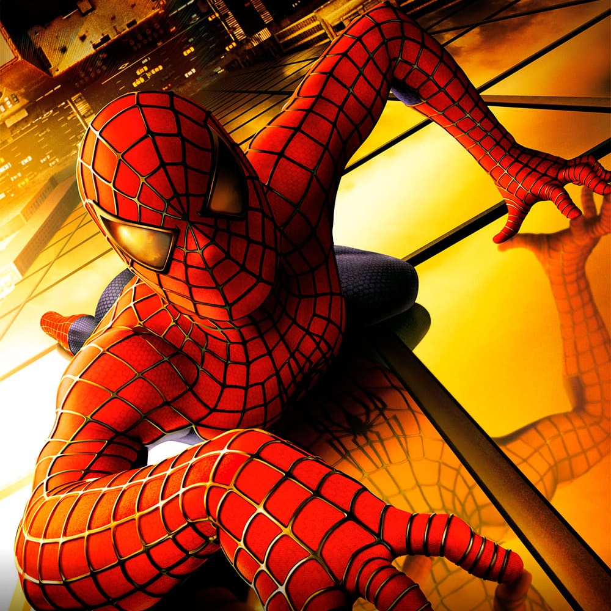
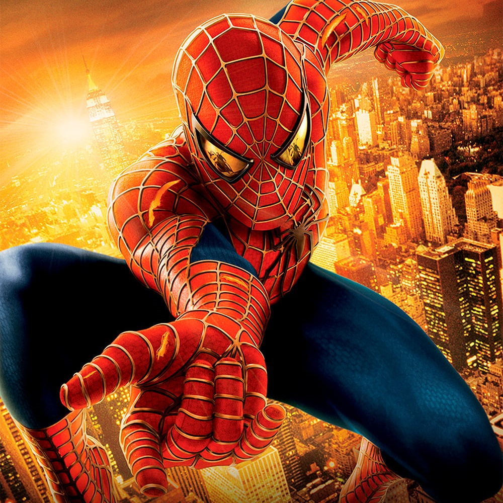
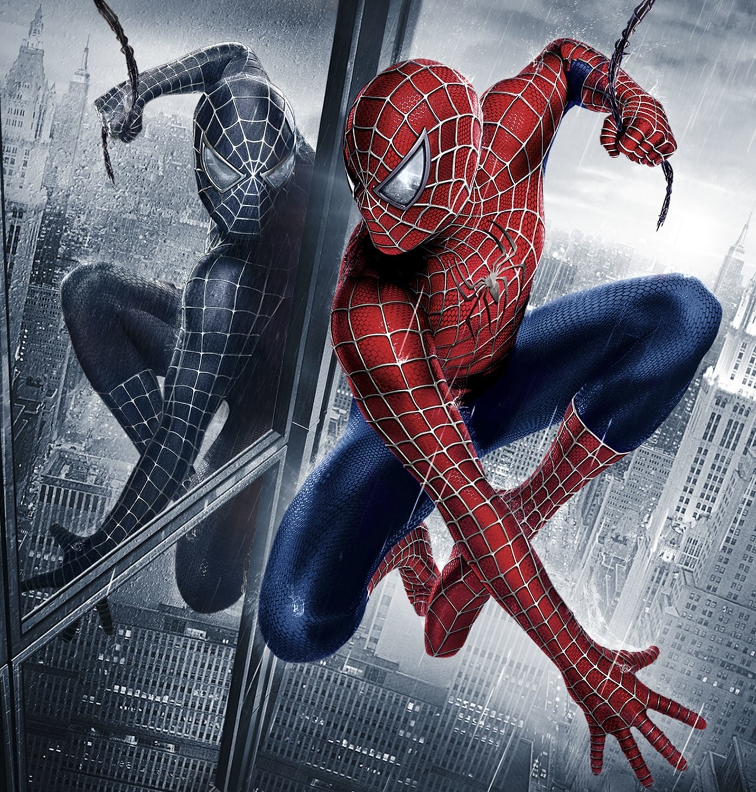
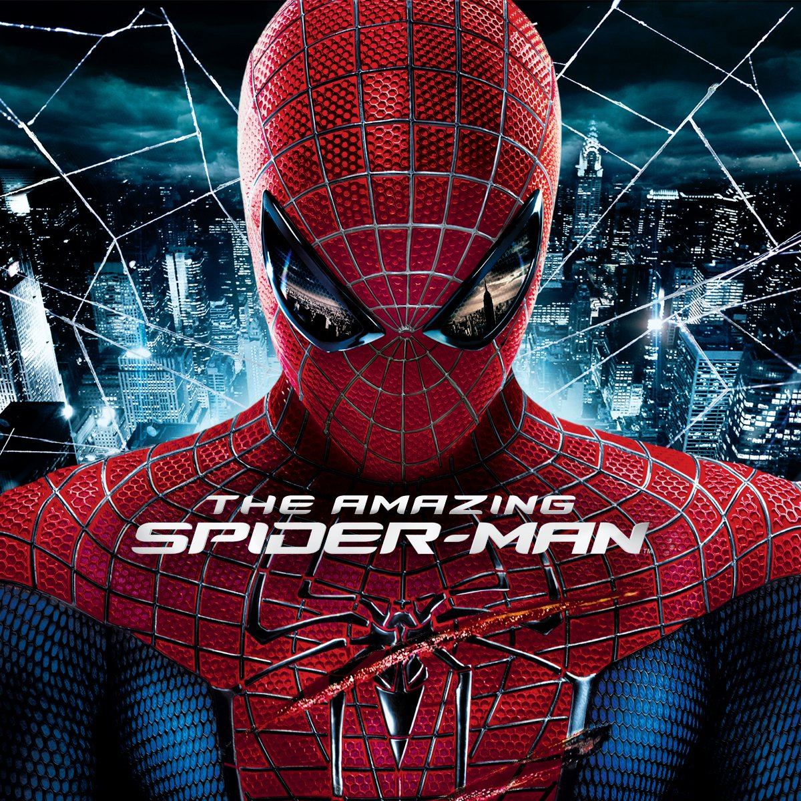
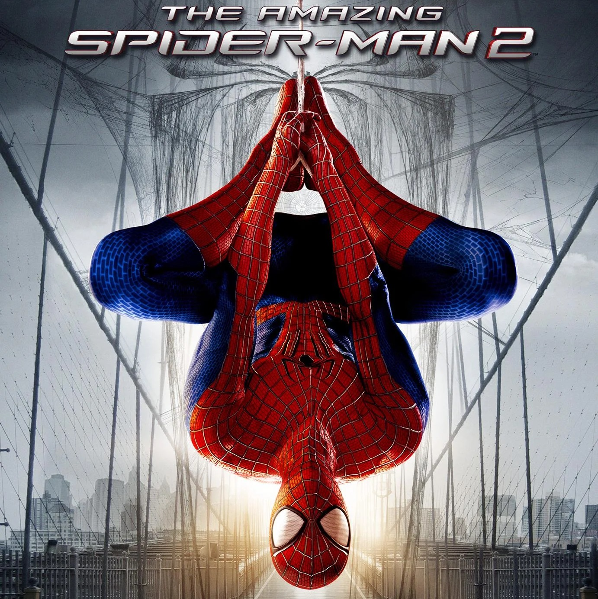
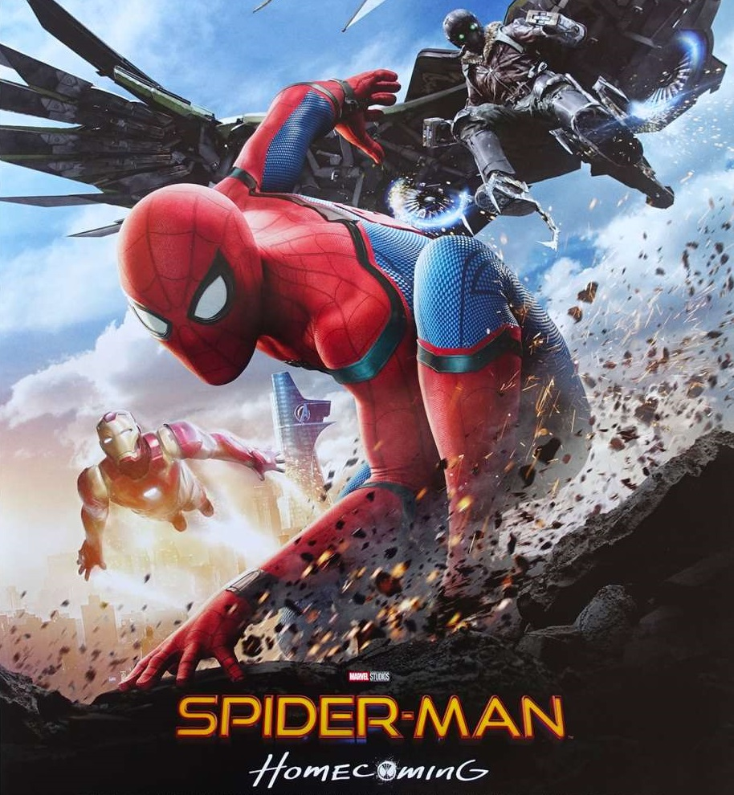
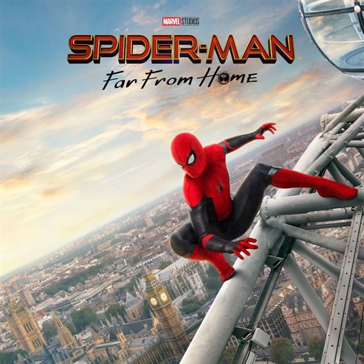
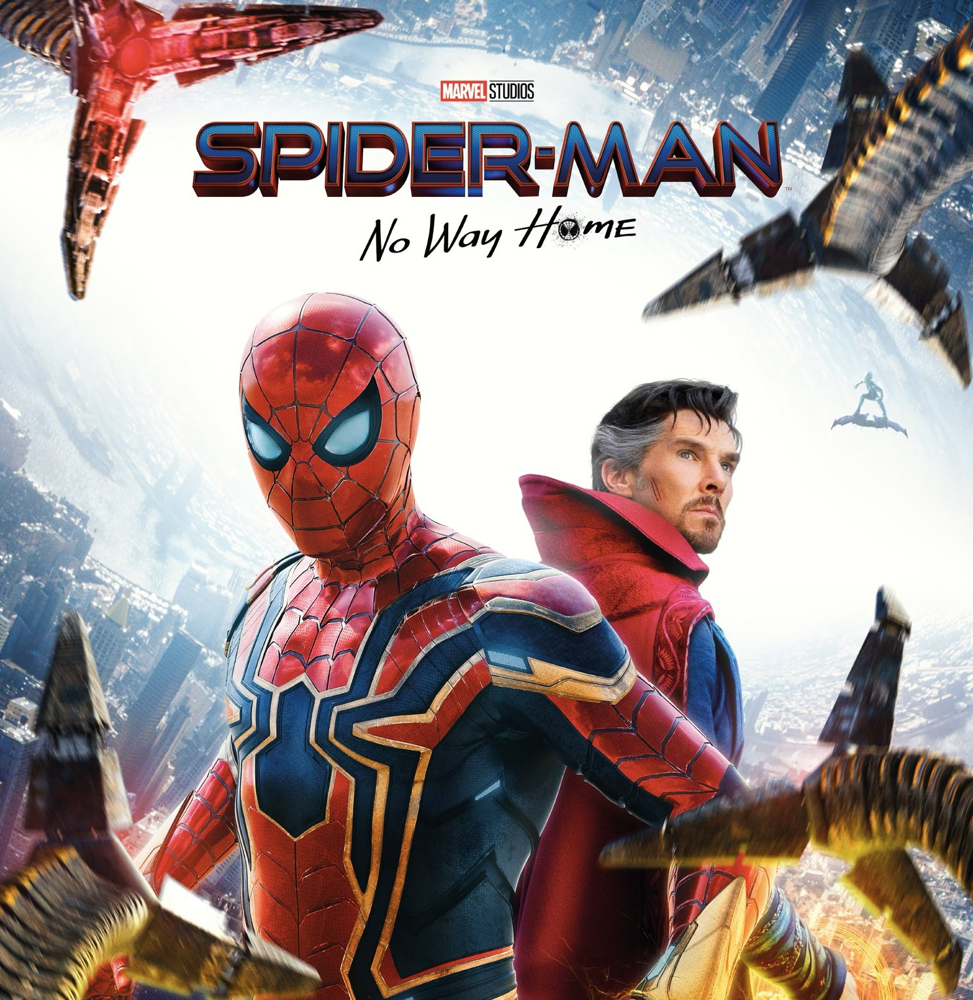
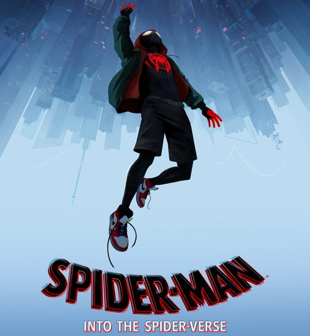
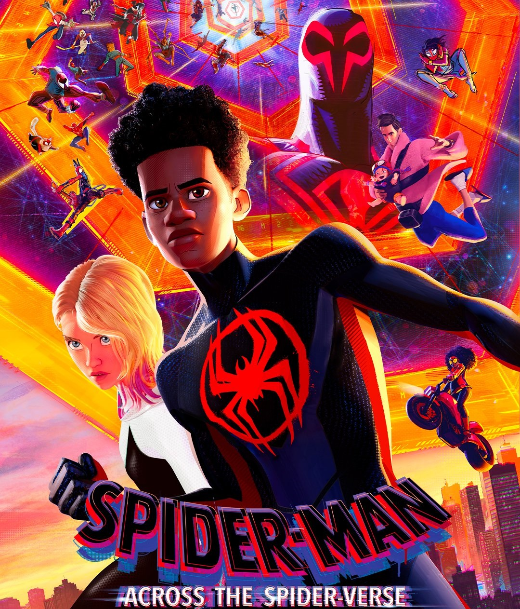

Oh! Hello again, I see you're interested in the famous Gallery page! Here, you can find the posters from the movies of each "generation." As I mentioned before, there are different Spider-Men in each universe! Those featured in the posters are listed below !
Tobey Maguire
Born on June 27, 1975, in Santa Monica, California, he is an American actor and producer. He is best known for playing Peter Parker/Spider-Man in the Spider-Man trilogy directed by Sam Raimi (2002, 2004, 2007). This iconic role launched his career and made him a prominent figure in Hollywood.
Andrew Garfield
Born on August 20, 1983, in Los Angeles, he is an Anglo-American actor raised in England. He became widely known for his role as Peter Parker/Spider-Man in The Amazing Spider-Man (2012) and The Amazing Spider-Man 2 (2014), directed by Marc Webb.
Tom Holland
Born on June 1, 1996, in Kingston upon Thames, England, he is a British actor who achieved global fame for his portrayal of Peter Parker/Spider-Man in the Marvel Cinematic Universe (MCU). He made his debut in Captain America: Civil War (2016) and continued with blockbuster films like Spider-Man: Homecoming (2017), Spider-Man: Far From Home (2019), and Spider-Man: No Way Home (2021).
Miles Morales
Miles is a teenager of African-American descent on his father's side, Jefferson Davis, and Puerto Rican heritage on his mother’s side, Rio Morales. After being bitten by a genetically modified spider, he develops powers similar to Peter Parker, including wall-crawling, superhuman strength, and a "spider-sense," along with unique abilities such as invisibility and bioelectric venom blasts.









